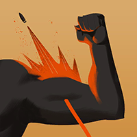
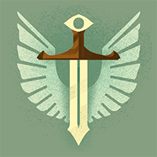
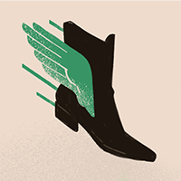
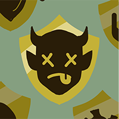
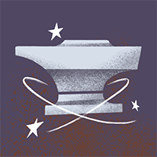
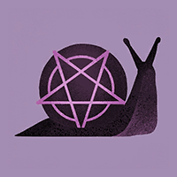
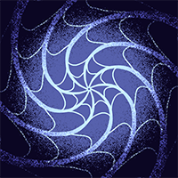
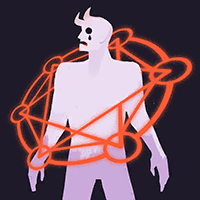

Paige build
Gun Paige
33% of Paige players · All Paige builds
3,016 matches, weighted toward Oracle and above, played since 22 August 2026. How the builds are made
Purchase order
Laning, 0–10 min
1 High-Velocity Roundsbuilds into Opening Rounds 800
High-Velocity Rounds
800 souls · builds into Opening Rounds
- Bullet Velocity
- +60%
- Weapon Damage
- +8%
Bought by 89% of this build's players (2,672 of 3,016), most often as purchase 1.
2

Opening Rounds+25% Weapon Damage
1,600
Opening Rounds
1,600 souls
- Bullet Velocity
- +60%
- Weapon Damage
- +8%
- Spirit Power
- +7
Passive
Your attacks have additional Weapon Damage against enemies above 50% health.
- Weapon Damage
- +25%
Bought by 70% of this build's players (2,118 of 3,016), most often as purchase 3.
3 Gritbuilds into Guardian Ward 800
Grit
800 souls · builds into Guardian Ward
- Out of Combat Regen
- +1.0
Active
Gain a Barrier for a short duration.
- Barrier
- 200
- Barrier Duration
- 4s
- Cooldown
- 60s
Bought by 66% of this build's players (1,988 of 3,016), most often as purchase 3.
4

Guardian Wardbuilds into Divine Barrier
1,600
Guardian Ward
1,600 souls · builds into Divine Barrier
- Ability Range
- +8%
- Out of Combat Regen
- +1.5
Active
Provide the target with a Barrier and temporary Move Speed.
Can be self-cast.
Cooldown is reduced by half when cast on someone else.
- Barrier
- 250
- Move Speed
- +2.75m m
- Cooldown
- 60s
- Buff Duration
- 6s
- Cast Range
- 40m
Bought by 72% of this build's players (2,168 of 3,016), most often as purchase 6.
5

Sprint Bootsbuilds into Trophy Collector
800
Sprint Boots
800 souls · builds into Trophy Collector
- Sprint Speed
- +2.0m
- Out of Combat Regen
- +2
Bought by 62% of this build's players (1,872 of 3,016), most often as purchase 4.
Mid game, 10–20 min
6

Trophy Collector+0.15m Sprint Speed
1,600
Trophy Collector
1,600 souls
- Weapon Damage vs. NPCs
- -15%
- Sprint Speed
- +2.0m
- Out of Combat Regen
- +2
Passive
Whenever you score an assist or kill, gain extra sprint, ability range and passive soul generation. This effect stacks and persists through death.
- Sprint Speed
- +0.15m
- Ability Range
- +0.75%
- Souls per Minute
- 18
- Max Stacks
- 16
Bought by 82% of this build's players (2,464 of 3,016), most often as purchase 5.
7

KnockdownStun
3,200
Knockdown
3,200 souls
- Bonus Health
- +75
- Ability Range
- +5%
Active
Apply a Stun after 2s. Stun duration is increased against airborne targets.
Increases the target's gravity for the duration of the stun.
Stun
- Stun Duration
- 0.5s
- Cast Range
- 45m
Bought by 45% of this build's players (1,353 of 3,016), most often as purchase 9.
8
 Extra Staminabuilds into Arcane Surge
800
Extra Staminabuilds into Arcane Surge
800
Extra Stamina
800 souls · builds into Arcane Surge
- Stamina
- +1
- Stamina Recovery
- +12%
Bought by 30% of this build's players (902 of 3,016), most often as purchase 8.
9
 Arcane Surge+12% Ability Range
1,600
Arcane Surge+12% Ability Range
1,600
Arcane Surge
1,600 souls
- Stamina
- +1
- Stamina Recovery
- +12%
Passive
After you Dash-Jump, the next ability you use within 7s will have bonus Range, Duration, and Spirit Power.
- Ability Range
- +12%
- Ability Duration
- +15%
- Spirit Power
- +20
- Cast Window
- 7s
Bought by 27% of this build's players (806 of 3,016), most often as purchase 9.
10
 Mystic Expansionbuilds into Greater Expansion
800
Mystic Expansionbuilds into Greater Expansion
800
Mystic Expansion
800 souls · builds into Greater Expansion
Passive
Imbue an ability to increase its range and effect radius.
- Ability Range
- +20%
Bought by 68% of this build's players (2,061 of 3,016), most often as purchase 9.
11

Slowing Hexbuilds into Vortex Web
1,600
Slowing Hex
1,600 souls · builds into Vortex Web
- Sprint Speed
- +0.5m
Active
Slows movement of enemy target. Also Silences their movement-based items and abilities.
Increases the target's gravity.
Does not affect target's stamina usage.
- Move Speed
- -20%
- Dash Distance
- -30%
- Cast Range
- 25m
- Duration
- 3.5s
- Cooldown
- 27s
Bought by 59% of this build's players (1,776 of 3,016), most often as purchase 9.
Late game, 20+ min
12

Vortex Web12m Capture Radius
6,400
Vortex Web
6,400 souls
- Ability Range
- +8%
- Sprint Speed
- +0.75m
Active
Throw a vacuum grenade, pulling all enemies into a small area and applying Slowing Hex.
Alt Cast to Target Unit Directly.
- Capture Radius
- 12m
- Move Speed
- -35%
- Duration
- 4.0s
- Cooldown
- 42.0s
- Dash Distance
- -40%
Bought by 35% of this build's players (1,043 of 3,016), most often as purchase 14.
13
 Greater Expansion+30% Ability Range
3,200
Greater Expansion+30% Ability Range
3,200
Greater Expansion
3,200 souls
- Spirit Resist
- +10%
Passive
Increases the range and effect radius of your abilities and items.
- Ability Range
- +30%
Bought by 47% of this build's players (1,431 of 3,016), most often as purchase 15.
14 Divine Barrier600 Barrier 6,400
Divine Barrier
6,400 souls
- Ability Range
- +10%
- Out of Combat Regen
- +1.5
Active
Remove all non-stun debuffs from the target and provide them with a Barrier and Move Speed.
Can be self-cast. Cooldown is reduced by half when cast on someone else.
- Barrier
- 600
- Move Speed
- +2.75m m
- Cooldown
- 45s
- Buff Duration
- 6s
- Cast Range
- 40m
Bought by 46% of this build's players (1,390 of 3,016), most often as purchase 14.
15

Cursed RelicSilenced
6,400
Cursed Relic
6,400 souls
Active
Curses an enemy - interrupting, Silencing, Disarming, and preventing item usage. Removes all non-ultimate buffs.
Your own Damage Output is reduced for the duration.
Silenced · Disarm
- Cooldown
- 55.0s
- Duration
- 3.25s
- Cast Range
- 20m
- Damage Penalty
- -25%
Bought by 43% of this build's players (1,283 of 3,016), most often as purchase 14.
16
 Compress Cooldownbuilds into Superior Cooldown
1,600
Compress Cooldownbuilds into Superior Cooldown
1,600
Compress Cooldown
1,600 souls · builds into Superior Cooldown
Passive
Imbue an ability to reduce its Cooldown.
- Ability Cooldown Reduction
- +18%
Bought by 39% of this build's players (1,176 of 3,016), most often as purchase 12.
17
 Superior Cooldown+20% Ability Cooldown Reduction
3,200
Superior Cooldown+20% Ability Cooldown Reduction
3,200
Superior Cooldown
3,200 souls
- Out of Combat Regen
- +4
Passive
Reduces the Cooldown of your abilities.
- Ability Cooldown Reduction
- +20%
Bought by 47% of this build's players (1,411 of 3,016), most often as purchase 14.
Costs are in souls. Hover or tap an item for what it does and how many of this build's players buy it.
Copy into the build browser
Open the game's build editor beside this and add the items in this order.
Items
- High-Velocity Rounds
- Opening Rounds
- Grit
- Guardian Ward
- Sprint Boots
- Trophy Collector
- Knockdown
- Extra Stamina
- Arcane Surge
- Mystic Expansion
- Slowing Hex
- Vortex Web
- Greater Expansion
- Divine Barrier
- Cursed Relic
- Compress Cooldown
- Superior Cooldown
Ability points
- Plot Armor
- Plot Armor
- Captivating Read
- Bookwyrm
- Plot Armor
- Rallying Charge
- Rallying Charge
- Plot Armor
- Rallying Charge
- Captivating Read
- Bookwyrm
- Bookwyrm
- Bookwyrm
- Captivating Read
- Rallying Charge
- Captivating Read
Ability order
Spend points left to right. As in the game's build browser, a marker shows what the upgrade costs in ability points; an empty marker unlocks the ability.
| 1 | 2 | 3 | 4 | 5 | 6 | 7 | 8 | 9 | 10 | 11 | 12 | 13 | 14 | 15 | 16 | |
|---|---|---|---|---|---|---|---|---|---|---|---|---|---|---|---|---|
| Plot Armor | unlock | 1 | 2 | 5 | ||||||||||||
| Captivating Read | unlock | 1 | 2 | 5 | ||||||||||||
| Bookwyrm | unlock | 1 | 2 | 5 | ||||||||||||
| Rallying Charge | unlock | 1 | 2 | 5 |
If you're facing…
Items in this build that players buy more often against one enemy hero, measured across every hero's players.
- Vindicta: Knockdown 11.8% against Vindicta, 5.5% overall · 51,237 player-matches
- Apollo: Slowing Hex 21.1% against Apollo, 15.3% overall · 30,690 player-matches